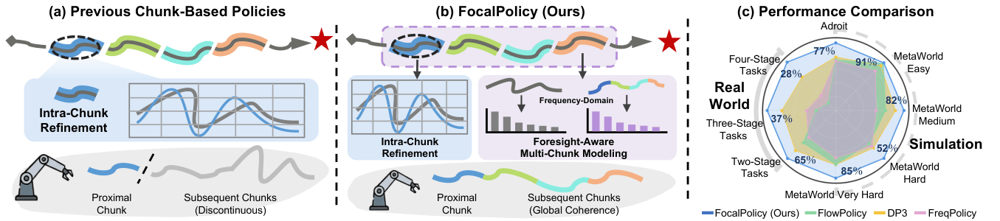
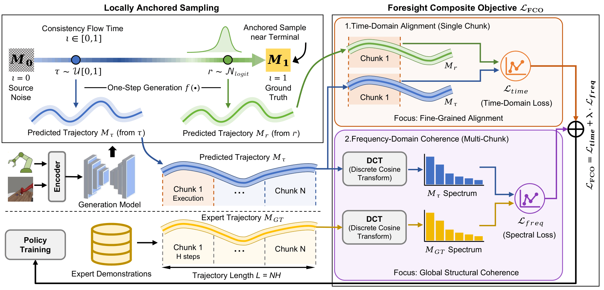
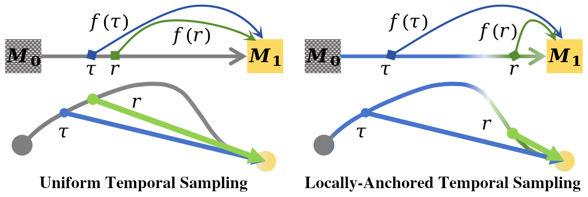
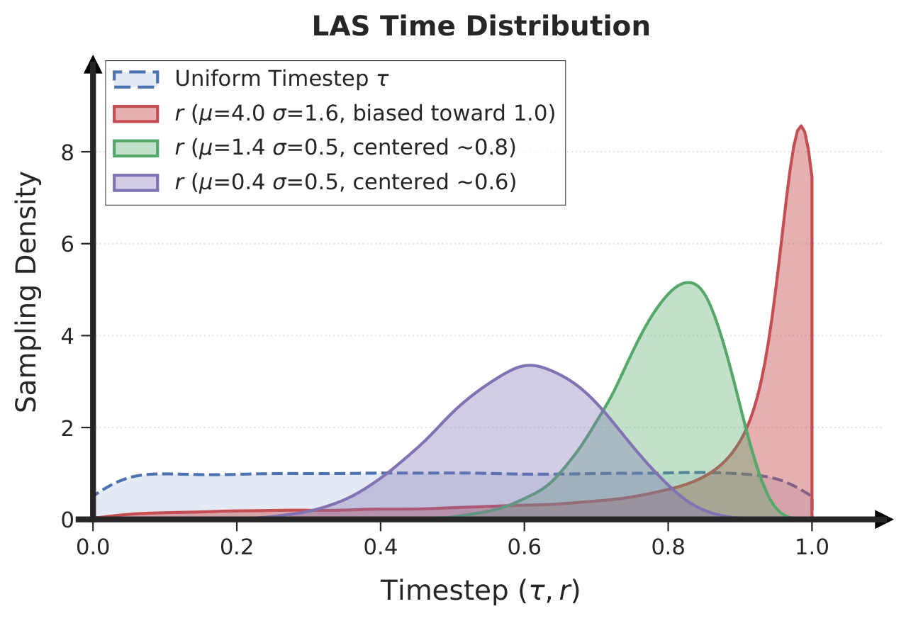
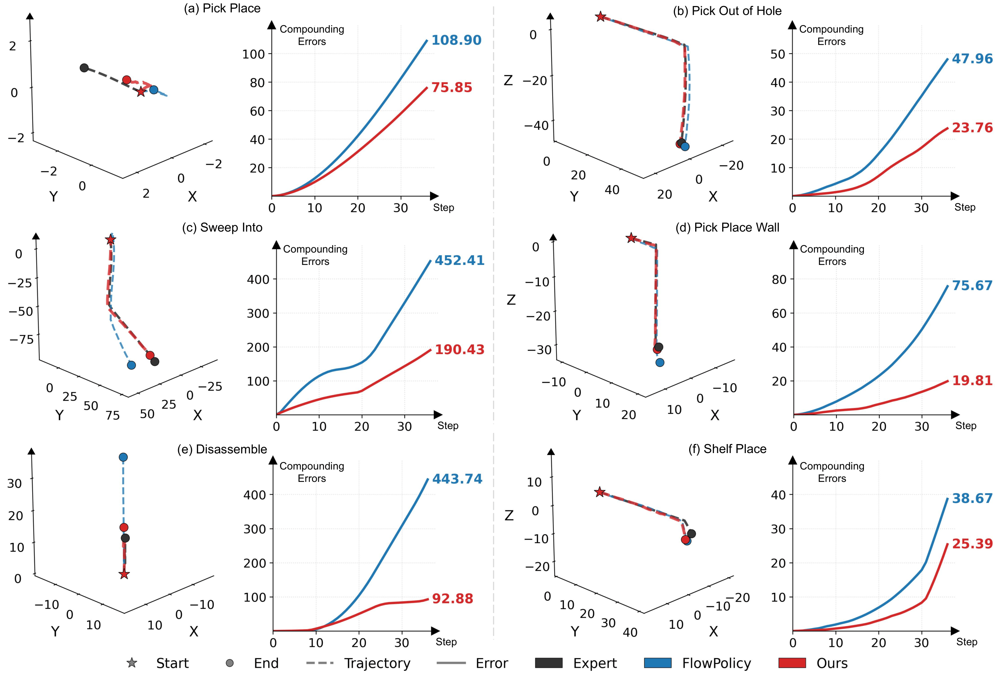
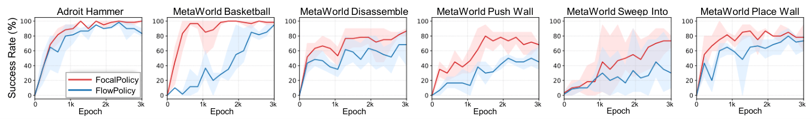
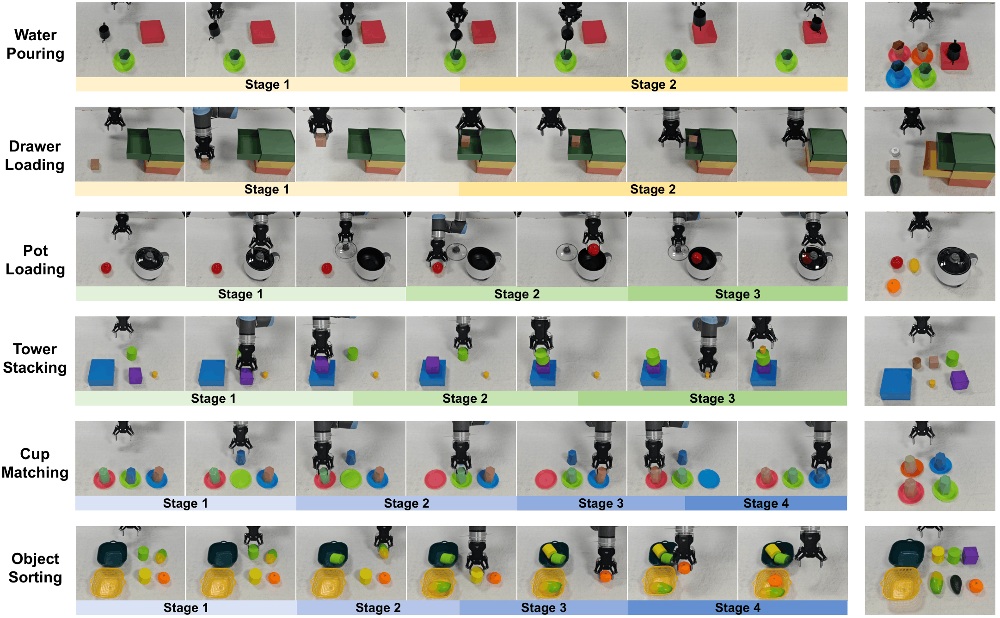
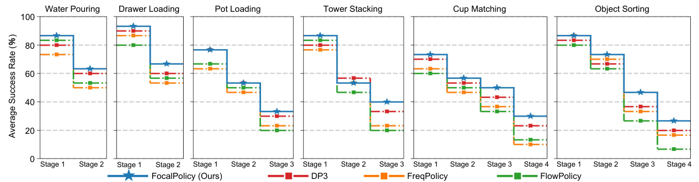

FocalPolicy seamlessly executes sequential multi-stage tasks by bridging inter-chunk discontinuities.
Visuomotor policies aim to learn complex manipulation tasks from expert demonstrations. However, generating smooth and coherent trajectories remains challenging, as it requires balancing proximal precision with distal foresight. Existing approaches typically focus on optimizing intra-chunk action distributions, often neglecting the inter-chunk coherence. Consequently, inter-chunk discontinuities significantly impede the learning of coherent macro-trajectories.
To overcome this limitation and achieve a synergetic balance between precision and foresight, we propose FocalPolicy, a foresight-aware visuomotor policy that combines Frequency-Optimized Chunking with Locally Anchored flow matching. We introduce a foresight composite objective that supervises time-domain alignment within the proximal actions while regularizing frequency-domain structure over multiple future action chunks to improve cross-chunk coherence. To efficiently learn complex action distributions, we design locally anchored sampling to enhance target signal propagation efficiency during consistency flow matching training. Extensive experiments demonstrate that FocalPolicy outperforms existing approaches and confirm the generalizability of our modules.

Comparison: Previous chunk-based policies (left) vs. FocalPolicy (right). FocalPolicy employs a Foresight Composite Objective to synergize proximal precision with distal coherence across chunks.
Current imitation learning-based policies adopt action chunking to mitigate compounding errors. However, frameworks like Consistency Flow Matching (CFM) typically focus entirely on optimizing intra-chunk refinement. Because they overlook inter-chunk discontinuities, they struggle to perceive global motion trends. This leads to disjointed execution and compounding errors over sequential stages.
FocalPolicy shifts the paradigm from single-chunk refinement to foresight-aware multi-chunk modeling. By utilizing prioritized learning, the policy ensures fine-grained fidelity for proximal actions while maintaining coarse structural coherence for distal trajectories.

Pipeline: The policy integrates proximal time-domain alignment with multi-chunk frequency-domain structural regularization via FCO, boosted by Locally Anchored Sampling (LAS).
To bridge inter-chunk discontinuities, FCO introduces a dual-horizon optimization target. It pairs a single-chunk time-domain loss with a multi-chunk spectral loss spanning multiple future chunks. We employ the Orthonormal Discrete Cosine Transform (DCT) to map macro-trajectories into the frequency domain, where low-frequency components naturally capture global motion trends and high-frequency components retain fine execution details.
Theoretical analysis establishes that this unweighted spectral loss induces concentrated, sparse gradients in the coefficient space for trend-level deviations (macroscopic drift), providing a sensitivity gain of \(\sqrt{L}\) that significantly improves the effective signal-to-noise ratio during stochastic optimization without over-smoothing.
In consistency flow matching training, standard uniform time sampling imposes consistency constraints randomly along the trajectory, which dramatically weakens the propagation of true target signals. This variance bottleneck slows down the optimization of complex distribution trajectories.
To address this, Locally Anchored Sampling (LAS) actively biases the teacher (anchor) timestep \(r\) toward the high-fidelity terminal region using a Logit-Normal distribution, while keeping the student flow time \(\tau\) uniformly sampled. We formalize the Target-signal Propagation Efficiency \(\mathcal{E}(\tau)\) as the alignment fidelity between the consistency gradient \(g_{cons}\) and the ideal supervised gradient \(g_{sup}\):

Figure 3: Time sampling comparison. Standard uniform sampling (left) vs. Locally Anchored Sampling (right) biasing \(r\) toward the terminal region to strengthen target-signal propagation.

Figure 8: Visualization of the sampling distributions. The solid red curve highlights our optimal Logit-Normal time sampling mass distribution compared to vanilla uniform sampling (dashed line).
Empirical validations demonstrate that local anchoring within the near-terminal region is essential. Shifting the anchor center toward earlier flow stages causes a rapid decay in target propagation efficiency, resulting in severe policy degradation:
| Configuration of \(r\) | Anchor Center | Adroit Success Rate (%) | MetaWorld Success Rate (%) | Average (%) |
|---|---|---|---|---|
| \(\mu_r=0.4, \sigma_r=0.5\) | \(\approx 0.6\) | 14.0% (Hammer) | 13.9% (Sweep-Into) | 13.9% |
| \(\mu_r=1.4, \sigma_r=0.5\) | \(\approx 0.8\) | 80.7% (Hammer) | 47.6% (Sweep-Into) | 47.6% |
| Ours (\(\mu_r=4.0, \sigma_r=1.6\)) | \(\approx 1.0\) | 100.0% / 63.2% | 70.7% / 29.3% | 69.7% |
Comprehensive evaluation across 53 manipulation tasks from the Adroit and MetaWorld platforms.
| Method | NFE | Adroit (3) |
MetaWorld Easy (28) |
MetaWorld Medium (11) |
MetaWorld Hard (6) |
MetaWorld Very Hard (5) |
Average |
|---|---|---|---|---|---|---|---|
| DP | 10 | 31.7 | 83.6 | 31.1 | 9.0 | 26.6 | 55.9 |
| ManiCM | 1 | 72.3 | 83.6 | 55.6 | 33.3 | 67.0 | 69.9 |
| SDM | 1 | 74.0 | 86.5 | 65.8 | 35.8 | 71.6 | 74.4 |
| DP3 | 10 | 70.4 ± 3.2 | 89.3 ± 0.1 | 77.2 ± 2.7 | 47.1 ± 2.3 | 78.1 ± 0.9 | 79.9 |
| FlowPolicy | 1 | 69.0 ± 2.6 | 91.1 ± 0.2 | 71.9 ± 1.2 | 45.2 ± 0.9 | 77.9 ± 0.6 | 79.4 |
| FreqPolicy | - | 68.6 ± 0.8 | 85.4 ± 0.2 | 66.6 ± 2.0 | 46.4 ± 2.1 | 74.4 ± 2.4 | 75.1 |
| FocalPolicy (Ours) | 1 | 76.9 ± 2.2 | 91.4 ± 0.1 | 81.9 ± 1.6 | 51.8 ± 3.8 | 85.1 ± 1.6 | 83.6 |
Analysis: As presented in Table 1, FocalPolicy establishes a new state-of-the-art across the evaluated benchmarks. It achieves an impressive average success rate of 83.6%, substantially outperforming existing leading baselines such as DP3 (79.9%) and FlowPolicy (79.4%). The superiority of our approach is particularly evident in tasks demanding extended temporal dependencies and multi-stage interactions (e.g., MetaWorld Very Hard tasks), proving that distal foresight effectively guides complex action distributions.
| Method | Adroit | MetaWorld | Average | |||||
|---|---|---|---|---|---|---|---|---|
| Hammer | Door | Pen | Sweep-Into | Hand-Insert | Pick-Place | Disassemble | ||
| DP3 | 85.7 ± 8.3 | 53.5 ± 5.1 | 98.3 ± 2.9 | 60.7 ± 11.9 | 14.3 ± 2.9 | 15.3 ± 0.6 | 61.7 ± 9.3 | 55.4 |
| DP3 w. Ours | 98.3 ± 1.5 | 58.3 ± 2.5 | 94.0 ± 0.0 | 53.0 ± 6.2 | 61.0 ± 3.5 | 37.3 ± 31.8 | 16.0 ± 2.6 | 60.6 |
| FlowPolicy | 59.3 ± 3.5 | 59.7 ± 2.1 | 98.7 ± 2.3 | 61.3 ± 3.2 | 62.7 ± 4.5 | 62.3 ± 17.6 | 16.5 ± 0.7 | 55.3 |
| FlowPolicy w. Ours | 99.7 ± 0.6 | 58.3 ± 3.8 | 53.0 ± 3.5 | 67.5 ± 1.3 | 70.7 ± 22.0 | 29.3 ± 16.2 | 70.7 ± 4.2 | 63.3 |
| FocalPolicy (Ours) | 100.0 ± 0.0 | 63.2 ± 5.3 | 67.5 ± 1.3 | 70.7 ± 22.0 | 29.3 ± 16.2 | 70.7 ± 4.2 | 86.7 ± 1.5 | 69.7 |
Analysis: Table 2 verifies the plug-and-play generalizability of our proposed modules (FCO and LAS). Integrating our modules into existing baselines (e.g., DP3 and FlowPolicy) consistently elevates their performance across various specific tasks. For instance, incorporating our modules into FlowPolicy increases its average success rate from 55.3% to 63.3%, confirming that optimizing cross-chunk coherence and target-signal propagation benefits the foundational architecture universally.

Analysis: As illustrated in Figure 7 (3D end-effector trajectories and error curves), FocalPolicy exhibits a distinct capability to mitigate compounding errors. Unlike standard flow matching policies that optimize chunks independently—resulting in disjointed spatial deviation—FocalPolicy utilizes frequency-domain structural regularization to preserve macroscopic trends. This foresight allows the policy to track expert macro-trajectories smoothly and prevents the catastrophic divergence typically observed in extended multi-stage manipulation.

Analysis: Figure 4 showcases the success rate progression across training epochs. FocalPolicy not only converges more rapidly than the baselines but also maintains a more stable asymptote. This accelerated learning efficiency is primarily attributed to Locally Anchored Sampling (LAS), which circumvents the variance bottlenecks of uniform sampling by actively anchoring the time flow toward high-fidelity terminal regions, thereby ensuring robust target-signal propagation.
Quantitative validation across six multi-stage real-world robotic tasks.

Figure 5: Illustration of the stage-wise execution for the evaluated real-world manipulation tasks.

Figure 6: Average success scores across sequential stages for evaluated methods. Horizontal lines signify stage-wise trajectory execution stability.
The real-world evaluation encompasses six complex multi-stage tasks ranging from two to four stages (e.g., Water Pouring, Drawer Loading, Pot Loading, Tower Stacking, Cup Matching, and Object Sorting). The empirical results demonstrate that FocalPolicy consistently outperforms existing baselines across all stages of every task, thoroughly validating its exceptional capability in capturing complex multi-chunk action distributions.
1. Mitigating Performance Decline in Final Stages:
Notably, the performance advantage of FocalPolicy is most pronounced in the final stages of the tasks. Traditional behavior cloning and action chunking strategies (e.g., FlowPolicy) often suffer from sharp performance degradation as execution progresses due to compounding errors. By leveraging the Foresight Composite Objective (FCO), FocalPolicy proactively predicts longer macro-trajectories and effectively bridges inter-chunk discontinuities, thereby substantially mitigating the compounding errors inherent in sequential execution.
2. Distal Temporal Coherence:
In both open-loop and closed-loop high-dimensional manipulation scenarios, FocalPolicy exhibits exceptional robustness compared to FlowPolicy, which lacks distal spatiotemporal modeling. By structurally constraining global motion trends (low-frequency) and local manipulation details (high-frequency) in the spectral domain, our policy maintains highly coherent trajectories that closely align with expert demonstrations across extended temporal dependencies, ensuring safe and efficient real-world deployment.
@inproceedings{he2026focalpolicy,
title={FocalPolicy: Frequency-Optimized Chunking and Locally Anchored Flow Matching for Coherent Visuomotor Policy},
author={He, Qian and Yang, Zhenshuo and Liang, Wenqi and Hao, Chunhui and Sebe, Nicu and Tian, Jiandong},
booktitle={Proceedings of the 43rd International Conference on Machine Learning},
year={2026}
}